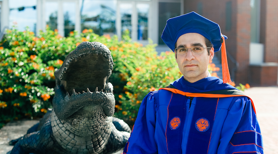

My name is Matin Kheirkhahan (Pronounciation: Mæ-teen Kér-kuh-hun – Persian: متین خیرخواهان). I am currently a software engineer at Google.
I received my Ph.D. in Computer Science from the University of Florida, Department of Computer and Information Science and Engineering in 2018. I had the privilege to be advised by brilliant Prof. Sanjay Ranka. My research was summarized into a dissertation titled “Machine Learning Methods for Activity Recognition Using Wearable Devices.”
I have M.Sc. in Artificial Intelligence (May 2012) and Computer Engineering (May 2018). I am also a University of Tehran alumnus (B.Sc. in Computer Engineering, class of 2009).
Prior to joining Google, I was a machine learning research intern at Philips Research North America in Fall 2017.